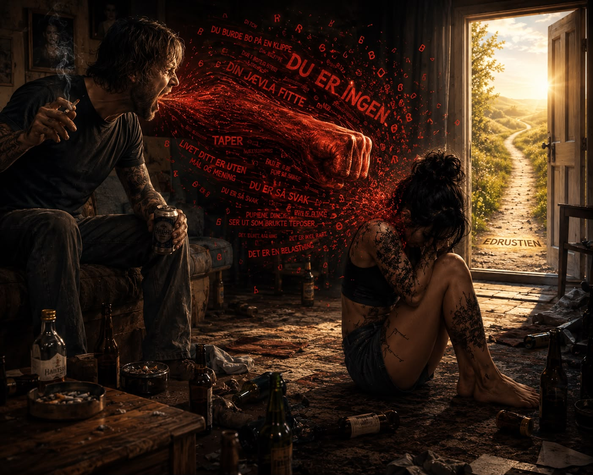

Du burde bo på en klippe
Jeg elsker moren min.
Men jeg liker henne ikke.
For en del av meg visste,
lenge før jeg hadde ord for det,
at jeg aldri var trygg i kjærligheten hennes.
Jeg trivdes egentlig aldri sammen med henne.
Ikke fordi jeg ikke ville.
Men fordi jeg hele tiden måtte gå på glasskår rundt henne.
Passe på humøret hennes.
Gjøre meg liten nok
til ikke å utløse mørket i henne.
Kritikken hennes hang i lufta.
Truslene kom når jeg minst ventet det.
For det var så ofte uten forvarsel, uten at jeg hadde gjort noe.
Ingenting som helst.
Likevel fant hun det for godt å piske meg med ordene sine.
Jeg var et barn som strakte meg etter varmen hennes,
men hun klarte aldri å gi meg den.
Klarte aldri å klemme meg.
Ta på meg.
Hun sparte den myke siden av seg selv
til resten av verden.
Og jeg lærte å overleve den siden av henne
ingen andre så.
Den som levde bak veggene vi bodde i.
Slik sorg lager dype sår i et barn.
Hvordan sørger jeg over noen som fortsatt lever, men som aldri klarte å være den moren jeg trengte?
Jeg lengter sånn etter noen
som egentlig aldri var der.
Det tok meg nesten førtifire år å forstå noe som virker så åpenbart.
At det som føles kjent,
ikke nødvendigvis er trygt.
Likevel har jeg brukt store deler av livet på å lete tilbake til det kjente.
Ikke fordi det gjorde meg godt.
Men fordi kroppen min kjente seg igjen.
Jeg trodde at jeg søkte trygghet.
Jeg ser nå at jeg søkte etter det kjente.
Selv når det gjør vondt.
Jeg valgte ikke hvilket miljø jeg vokste opp i.
Jeg måtte bare lære hvordan jeg skulle overleve.
Lære å lytte etter stemninger.
Å lese ansikter.
Å være stille.
Å være flink.
Å ta lite plass.
Å bære så mye mer enn et barn egentlig skal bære.
Og etter mange år begynte kroppen min å tro at dette var kjærlighet.
At uro var normalt.
At kritikk var omsorg.
At det å gå på tå var en del av det å være nær et annet menneske.
Ingen fortalte meg at dette bare var overlevelsesstrategier.
Jeg trodde det var meg.
Jeg trodde det var slik livet var.
Og kanskje er det derfor jeg ble værende.
Altfor lenge.
Hos mennesker som brøt meg ned.
I relasjoner som gjorde meg mindre.
I avhengighet.
Ikke fordi det føltes godt.
Men fordi det føltes kjent.
For når kroppen har lært at kjærlighet gjør vondt,
begynner den å tro at det er slik kjærlighet skal føles.
Så da han sa:
«Du burde bo på en klippe.»
«Puppene dine ser ut som brukte teposer.»
«Din jævla fitte.»
«Bitch.»
… ville vel de fleste ha rettet seg opp i ryggen og gått.
Ikke tatt ham tilbake for å høre:
«Det er ikke rart dine egne foreldre ikke vil ha deg.»
«Du er en belastning for det norske samfunnet.»
«At du gidder å leve, så taper som du er.»
… og hvert fall gått etter det.
Ikke tenkt at om jeg bare forsto mer,
så hvor vondt han hadde det,
bagatelliserte
og gikk tilbake igjen.
Bare for å viske ut meg selv og grensene mine enda litt til.
Og få høre at:
«Livet ditt er uten mål og mening.»
«Du er så svak.»
«Tatoveringene dine er stygge.»
«Du skulle aldri hatt barn.»
Jeg lot det fortsette.
Fordi jeg trodde kjærlighet var noe man måtte holde ut.
Jeg prøvde å forstå hvordan han kunne si sånne ting,
bli varm igjen,
og så fortsette med ordene sine.
I en evig runddans,
der alt handlet om hans behov,
og om at han hadde det vanskelig.
Som om han hadde rett til å blø på meg
fordi han aldri hadde stelt sine egne sår.
Jeg tror jeg måtte helt ned i grøfta.
Få det siste piskeslaget.
Før jeg klarte å plukke opp restene av min egen integritet
og lukke døra bak meg.
For godt.
Og jeg måtte gjøre det edru.
Jeg tør nesten ikke tenke på konsekvensene om jeg ikke hadde sluttet å drikke.
Jeg tror ikke jeg hadde funnet styrken til å velge meg selv i aktiv rus.
Det var ikke før jeg skjønte mitt eget mønster
at jeg klarte å endre meg.
Da jeg forsto at da jeg drakk,
lengtet jeg egentlig aldri etter alkoholen.
Jeg lengtet etter det som skjedde de første minuttene.
Stillheten.
At skuldrene sank.
At tankene sluttet å rope.
At kroppen endelig fikk hvile.
For et lite øyeblikk.
Det var aldri flasken jeg savnet.
Det var fraværet av smerten.
Og det tok lang tid før jeg forsto at alkoholen aldri var løsningen.
Den var bare en pauseknapp.
En pause fra et nervesystem som hadde levd altfor lenge i alarmberedskap.
Og vet du hva som har overrasket meg mest?
At trygghet ikke føltes trygg da jeg begynte å bli edru.
Den føltes fremmed.
Stillheten gjorde meg urolig.
Ro gjorde meg rastløs.
Mennesker som behandlet meg med respekt,
visste jeg nesten ikke hvordan jeg skulle forholde meg til.
For kroppen min var trent til noe annet.
Den var trent til å overleve.
Ikke til å leve.
Og jeg forstår så mye mer for hver dag jeg velger edruskapet mitt.
For med det kommer mestringen,
selvrespekten,
de klare tankene,
verdigheten
og dette lille frøet av håp.
Håp om et bedre liv.
Håp om ekte glede.
Mot til vonde dager.
Jeg trodde det var trygghet jeg lette etter.
Det var det aldri.
Jeg lette etter det kjente.
Nå øver jeg meg på noe helt annet.
Å velge det som er trygt,
selv når det føles uvant.
For så lenge jeg står støtt,
står edru
og viser meg selv kjærlighet,
så kommer tryggheten.
Sånn den egentlig er ment å være.
Ikke sånn jeg ble lært opp til å tro at den var.
Og nettopp derfor
skal jeg ikke drikke i dag.
